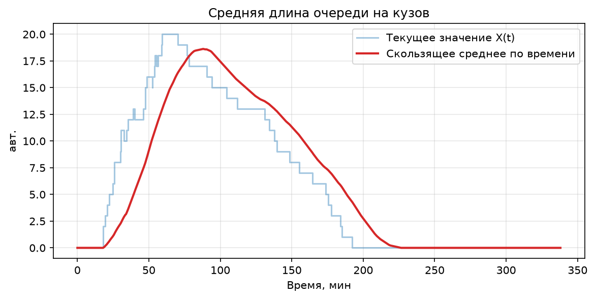
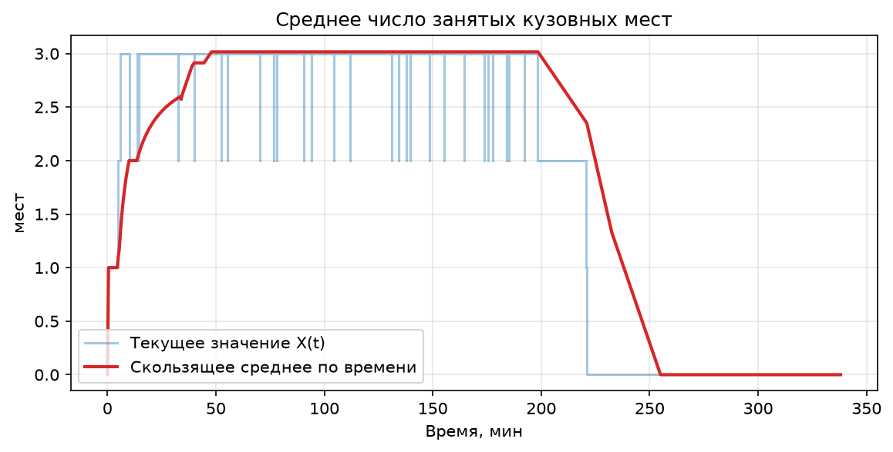
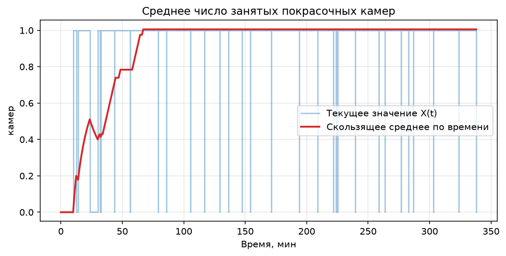
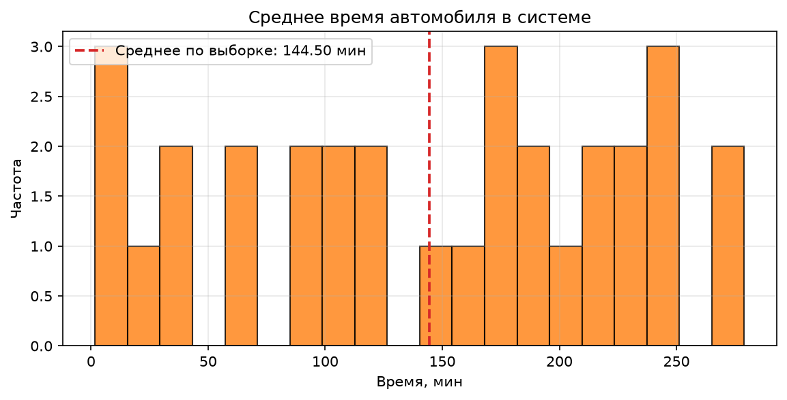
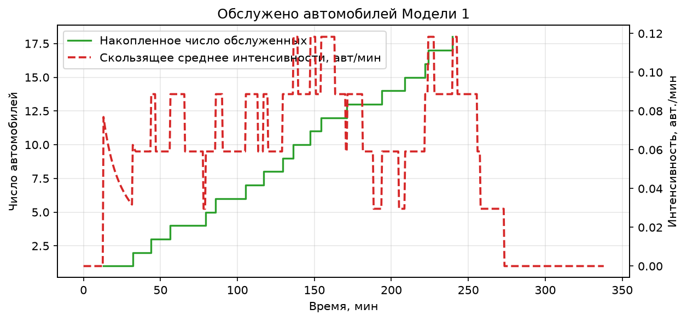
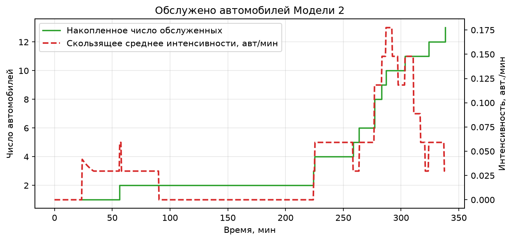
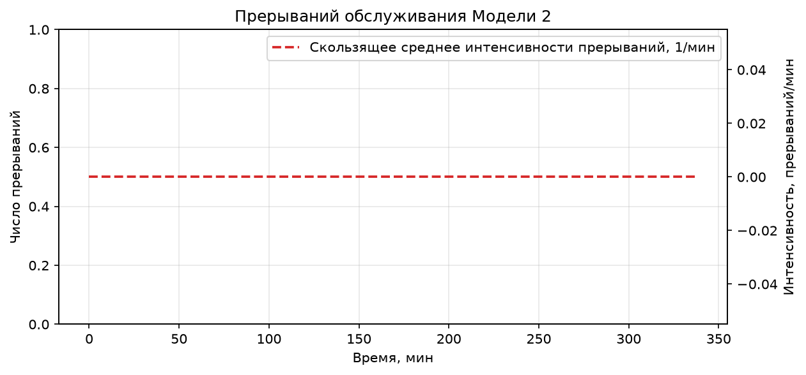
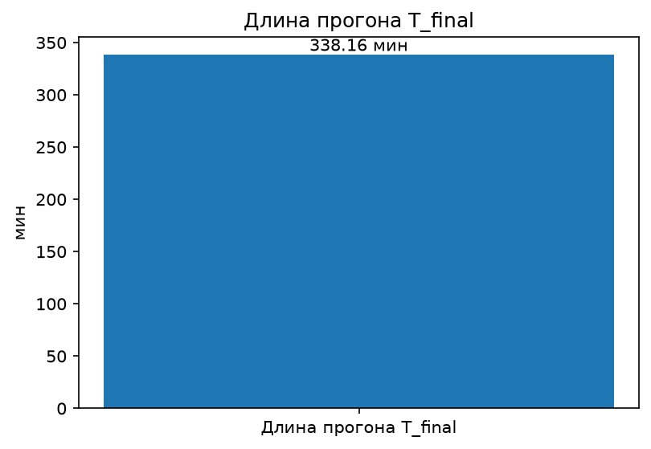

| Параметр | Значение |
|---|---|
| Режим drain | Да (дообслуживание) |
| T_final, мин | 338.1593 |
| Прибыло | 31 |
| Обслужено всего | 31 |
| Цензурировано | 0 |
| Цензурировано М1 | 0 |
| Цензурировано М2 | 0 |
| Прерываний М2 | 0 |
| Отклик | Значение | Ед. |
|---|---|---|
| Средняя длина очереди на кузов | 5.9333979803651395 | авт. |
| Среднее число занятых кузовных мест | 1.8485518849020839 | мест |
| Среднее число занятых покрасочных камер | 0.9443627800037131 | камер |
| Среднее время автомобиля в системе | 144.5030296351468 | мин |
| Обслужено автомобилей Модели 1 | 18 | шт. |
| Обслужено автомобилей Модели 2 | 13 | шт. |
| Прерываний обслуживания Модели 2 | 0 | шт. |
| Длина прогона T_final | 338.1593306209655 | мин |
| Параметр | Значение |
|---|---|
| num_body_places | 3 |
| num_paint_booths | 1 |
| mean_arrival_m1 | 4.8 |
| mean_arrival_m2 | 8.0 |
| body_repair_mu | 20.0 |
| body_repair_sigma | 12.0 |
| paint_ratio | 0.5 |
| paint_sigma | 2.0 |
| sim_time | 60.0 |
| seed | 42 |
| trace | False |
| drain | True |







